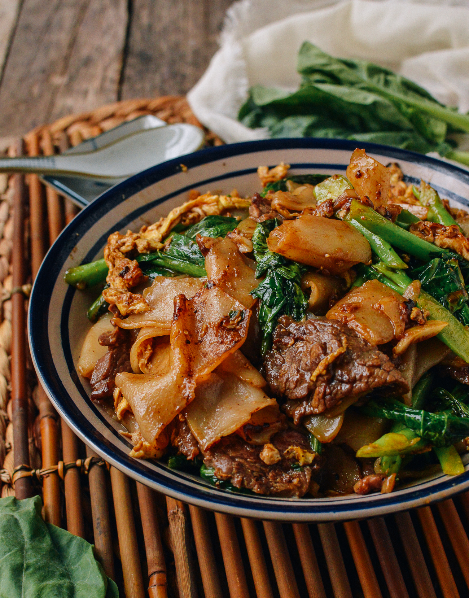

Pad See Ew

Description
Pad see ew is a stir-fried noodle dish that is commonly eaten in Thailand. It can be found
easily among street food vendors and is also quite popular in Thai restaurants around the
world. The origins of the dish can be traced to China from where the noodle stir-frying
technique was brought. Pad See Ew is salty, balanced with a touch of sour and a wonderful
chargrilled flavour which you can create at home!
Ingredients
- Dark Soy Sauce
- Light Soy Sauce
- Vinegar
- Sugar
- Garlic
- Noodles
- Chinese Broccoli
- Chicken / Beef
- Egg
Steps
- Prepare the noodles. Combine the oyster sauce and soy sauce in a small bowl.
- Heat one-third of the oil in a wok over high heat. Stir-fry half the chicken /beef
for 2 minutes or until browned. Transfer to a plate. Repeat with half the remaining
oil and the remaining chicken / beef, reheating the wok between batches.
Transfer to a plate.
- Heat the remaining oil in the wok. Stir-fry the garlic for 1 minute or until aromatic.
Add gai lan and stir-fry for 2-3 minutes. Add the noodles, chicken / beef,egg and
Cook, tossing, for 2 minutes or until the egg is cooked and the sauce reduces
slightly. Top with cooked chinese broccoli.